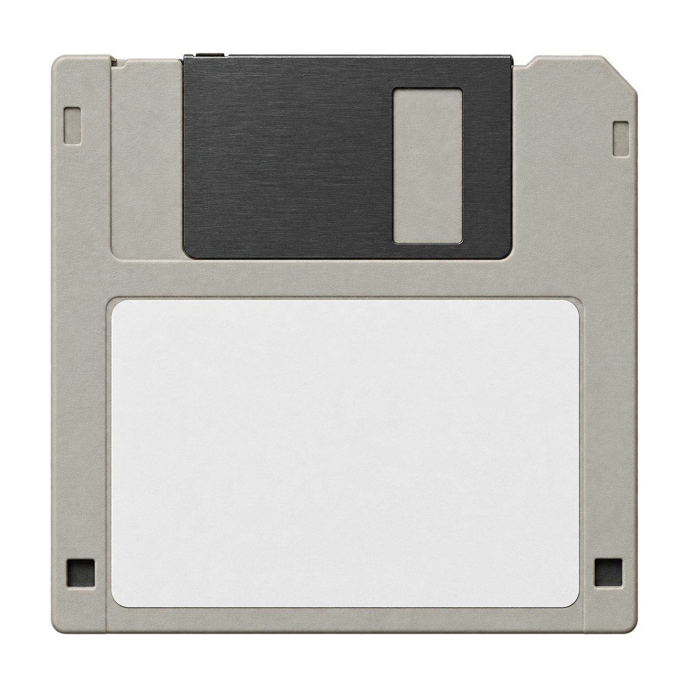
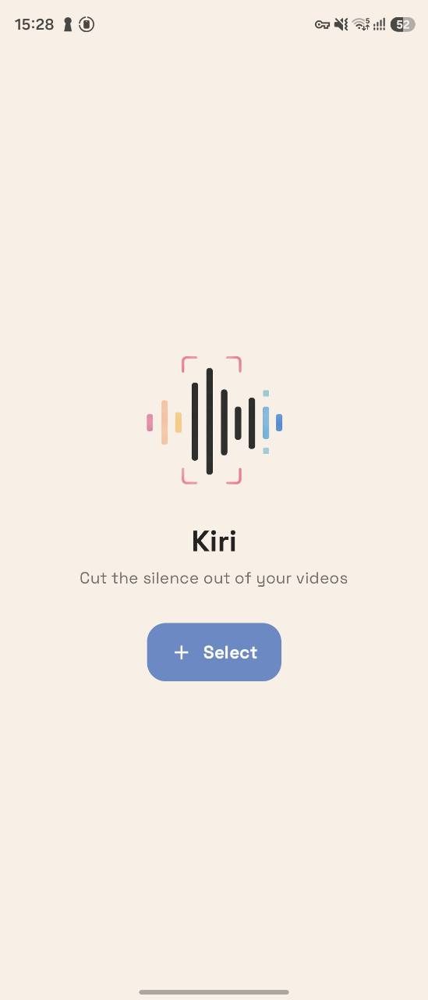
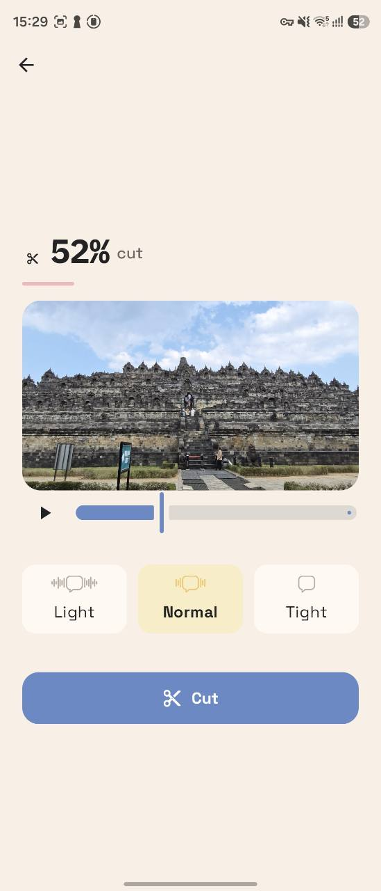

発話区間を解析
動画内の音声から、人が話している区間を検出します。
ANDROID VIDEO EDITOR
動画の発話部分を活かして、長い無音を短く整えるAndroid動画編集アプリです。
一般公開前 · 開発中
WHO IT'S FOR
動画の中から発話区間を検出し、長い無音部分を短く編集します。カットの強さを選び、書き出す前にプレビューで仕上がりを確認できます。
動画内の音声から、人が話している区間を検出します。
弱・中・強を切り替えて、発話前後に残す間を調整できます。
編集後のつながりを確認してから保存できます。
編集結果をMP4形式で端末のギャラリーへ保存します。
A QUICK LOOK
画面をクリックすると、大きく表示できます。


HOW IT WORKS
端末内の動画を選択します。
音声を解析し、発話区間を検出します。
カット強度を選び、プレビューで仕上がりを確認します。
編集した動画を端末へ書き出します。
PRICING & PRIVACY
基本機能は無料 · 書き出しはKiri Pro（買い切り）
インストール、動画の選択、音声解析、カット強度の調整、プレビューは無料です。完成動画の書き出しは、アプリ内課金「Kiri Pro」の買い切りで解放する設計です。販売価格は一般公開時にGoogle Play上で表示します。
動画・音声の解析、プレビュー、書き出しは端末内で行い、動画データを外部サーバーへ送信しない設計です。購入処理にはGoogle Playを使用します。
Kiriは現在、一般公開前です。